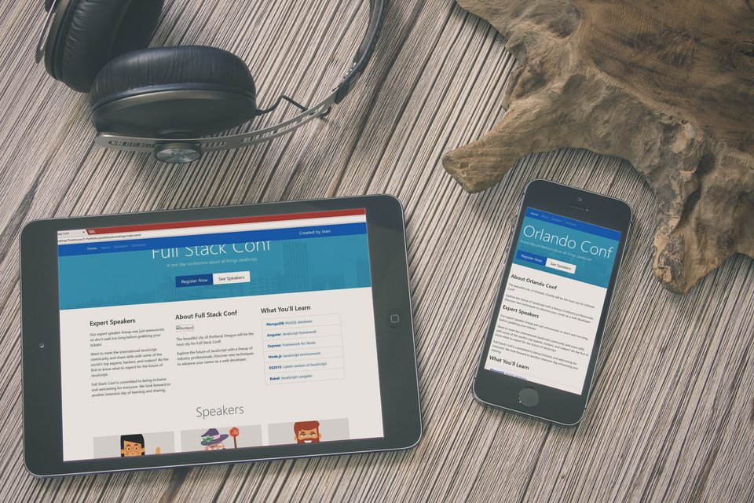

The areas in which I Excel
While I can wear the hat of a PHP/WordPress Developer, I do my best work as a Front End Web Developer. With my expertise on HTML, CSS, JavaScript, BootStrap & jQuery I develop high quality websites
If a page takes longer than 3 seconds to load, you could lost more than 1/3 of your total userbase. That is over 33% of potential users and lost revenue! I have learned all the techniques and best practices to make websites load as fast as possible.
Working with a fellow developer is a task made more enjoyable with clean and efficient code. I am very transparent about my code and follow the best practices for writing scalable and maintenable code without sacrificing performance.
To see smaller projects click here.
After the design was given to me, I recreated the design on BootStrap and later converted the site into a custom wordpress theme. This project showcases agency work for a local business who was in need of a website with CMS capabilities.
Visit the Website
After the design was given to me, I recreated the design on BootStrap and later converted the site into a custom wordpress theme. This project showcases agency work for a local business who was in need of a website with CMS capabilities.
Visit the WebsiteAfter the design was given to me, I recreated the design on BootStrap and later converted the site into a custom wordpress theme. This project showcases agency work for a local business who was in need of a website with CMS capabilities.
Visit the Website
I hear you. In fact, I agree with you. Whether you are a recruiter looking to hire me, a designer who wants their design coded, or a non-profit or business looking for a fresh new website, I believe I can help you. I'm always looking for new projects specially ones that challenge me to learn or expand on my skills. So don't be afraid of contacting me.